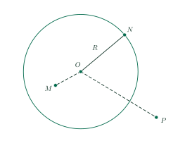
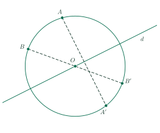

Introduction to CirclesMở đầu về đường tròn
Grade 9 · Topic: CirclesLớp 9 · Chủ đề: Đường tròn
1Lesson IntroductionGiới thiệu bài học
Learning goalsMục tiêu bài học
By the end of this lesson you can:
Sau bài học này, em có thể:
state the definition of a circle; use the words center, radius, diameter;
nêu được định nghĩa đường tròn; dùng đúng các từ tâm, bán kính, đường kính;
decide whether a point lies inside, on or outside a circle;
xác định được vị trí của một điểm đối với đường tròn;
know that a circle is symmetric about its center and about every line through its center;
biết đường tròn có tâm đối xứng là tâm và trục đối xứng là mọi đường thẳng đi qua tâm;
show that several points lie on the same circle and solve simple real-life problems.
chứng minh được nhiều điểm cùng nằm trên một đường tròn và giải bài toán thực tế đơn giản.
2Mathematical VocabularyTừ vựng Toán học
circle \((O;\,R)\) – all points at distance \(R\) from \(O\).
Đường tròn \((O;\,R)\) – gồm tất cả các điểm cách \(O\) đúng bằng \(R\).
center / radius – the point \(O\) / the distance \(R\) (also a segment \(OA\)).
Tâm / bán kính – điểm \(O\) / độ dài \(R\) (cũng chỉ đoạn \(OA\)).
diameter – a segment through \(O\) with both ends on the circle; length \(2R\).
Đường kính – đoạn thẳng đi qua \(O\), hai đầu nằm trên đường tròn; dài \(2R\).
lie inside / on / outside the circle – \(OM\lt R\) / \(OM=R\) / \(OM\gt R\).
Nằm trong / nằm trên / nằm ngoài đường tròn – \(OM\lt R\) / \(OM=R\) / \(OM\gt R\).
center of symmetry / axis of symmetry – the center \(O\) / every line through \(O\).
Tâm đối xứng / trục đối xứng – tâm \(O\) / mọi đường thẳng đi qua \(O\).
3Useful English PhrasesCụm từ tiếng Anh thường gặp
The circle has center \(O\) and radius \(R\).
Đường tròn có tâm \(O\), bán kính \(R\).
Points \(A\), \(B\) and \(C\) lie on the circle.
Các điểm \(A\), \(B\), \(C\) nằm trên đường tròn.
Since \(OA\) and \(OB\) are radii of the same circle, \(OA=OB\).
Vì \(OA\), \(OB\) là bán kính của cùng một đường tròn nên \(OA=OB\).
Therefore, triangle \(OAB\) is isosceles.
Do đó tam giác \(OAB\) cân tại \(O\).
Hence, we can conclude that the four points lie on the same circle.
Vậy ta kết luận bốn điểm cùng nằm trên một đường tròn.
4Prerequisite ReviewÔn tập kiến thức nền
Isosceles triangle. If \(OA=OB\) then \(\widehat{OAB}=\widehat{OBA}\).
Tam giác cân. Nếu \(OA=OB\) thì \(\widehat{OAB}=\widehat{OBA}\).
Rectangle. The two diagonals are equal and bisect each other.
Hình chữ nhật. Hai đường chéo bằng nhau và cắt nhau tại trung điểm mỗi đường.
5TheoryLý thuyết
5.1 Circle and the position of a pointĐường tròn. Vị trí tương đối của điểm và đường tròn
DefinitionĐịnh nghĩa
The circle with center \(O\) and radius \(R\) \((R\gt0)\), written \((O;\,R)\) or \((O)\), is the set of all points at distance \(R\) from \(O\).
Đường tròn tâm \(O\) bán kính \(R\) \((R\gt0)\), kí hiệu \((O;\,R)\) hoặc \((O)\), là hình gồm tất cả các điểm cách \(O\) đúng bằng \(R\).
A diameter passes through \(O\) and has both endpoints on the circle; its length is \(2R\).
Đường kính đi qua \(O\), hai đầu mút nằm trên đường tròn; độ dài bằng \(2R\).

| Position of \(M\)Vị trí của điểm \(M\) | ConditionHệ thức |
|---|---|
| \(M\) lies inside \((O;\,R)\)\(M\) nằm trong \((O;\,R)\) | \(OM\lt R\)\(OM\lt R\) |
| \(M\) lies on \((O;\,R)\)\(M\) nằm trên \((O;\,R)\) | \(OM=R\)\(OM=R\) |
| \(M\) lies outside \((O;\,R)\)\(M\) nằm ngoài \((O;\,R)\) | \(OM\gt R\)\(OM\gt R\) |
5.2 Symmetry of a circleTính đối xứng của đường tròn
PropertiesTính chất
A circle is symmetric about its center: its center is its center of symmetry.
Đường tròn là hình có tâm đối xứng; tâm đối xứng là tâm của đường tròn.
A circle is symmetric about every line through its center: each such line (each diameter) is an axis of symmetry, so a circle has infinitely many axes of symmetry.
Đường tròn là hình có trục đối xứng; mỗi đường thẳng đi qua tâm (mỗi đường kính) là một trục đối xứng, nên đường tròn có vô số trục đối xứng.

To show that points lie on one circleChứng minh nhiều điểm cùng nằm trên một đường tròn
Find a point \(O\) whose distances to all the points are equal; then they lie on the circle with center \(O\). Examples: the four vertices of a rectangle (center = intersection of the diagonals); the three vertices of a right triangle (center = midpoint of the hypotenuse).
Tìm một điểm \(O\) cách đều tất cả các điểm đó; khi đó chúng cùng nằm trên một đường tròn tâm \(O\). Ví dụ: bốn đỉnh của hình chữ nhật (tâm là giao điểm hai đường chéo); ba đỉnh của tam giác vuông (tâm là trung điểm cạnh huyền).
6Worked ExamplesVí dụ có lời giải
ExampleVí dụ 1RememberingNhận biết – Position of pointsVị trí của điểm
Given \((O;\,5\text{ cm})\) and points \(A\), \(B\), \(C\) with \(OA=3\) cm, \(OB=5\) cm, \(OC=7\) cm. Where does each point lie?
Cho \((O;\,5\text{ cm})\) và các điểm \(A\), \(B\), \(C\) với \(OA=3\) cm, \(OB=5\) cm, \(OC=7\) cm. Mỗi điểm nằm ở đâu so với đường tròn?
Analysis: Compare each distance with \(R=5\).
Phân tích: So sánh từng khoảng cách với \(R=5\).
\(OA=3\lt5\): \(A\) lies inside the circle.
\(OA=3\lt5\): \(A\) nằm trong đường tròn.
\(OB=5=R\): \(B\) lies on the circle.
\(OB=5=R\): \(B\) nằm trên đường tròn.
\(OC=7\gt5\): \(C\) lies outside the circle.
\(OC=7\gt5\): \(C\) nằm ngoài đường tròn.
\(A\) inside, \(B\) on, \(C\) outside.
\(A\) nằm trong, \(B\) nằm trên, \(C\) nằm ngoài đường tròn.
ExampleVí dụ 2UnderstandingThông hiểu – SymmetryTính đối xứng
\(A\) lies on \((O;\,4\text{ cm})\). Let \(A^{\prime}\) be symmetric to \(A\) with respect to \(O\). Does \(A^{\prime}\) lie on the circle? Find \(AA^{\prime}\).
Điểm \(A\) nằm trên \((O;\,4\text{ cm})\). Gọi \(A^{\prime}\) là điểm đối xứng với \(A\) qua \(O\). \(A^{\prime}\) có nằm trên đường tròn không? Tính \(AA^{\prime}\).
Analysis: \(O\) is the midpoint of \(AA^{\prime}\).
Phân tích: \(O\) là trung điểm của \(AA^{\prime}\).
\(O\) is the midpoint of \(AA^{\prime}\), so \(OA^{\prime}=OA=4\) cm: \(A^{\prime}\) lies on the circle.
\(O\) là trung điểm của \(AA^{\prime}\) nên \(OA^{\prime}=OA=4\) cm: \(A^{\prime}\) nằm trên đường tròn.
\(AA^{\prime}\) is a diameter: \(AA^{\prime}=2\cdot4=8\) cm.
\(AA^{\prime}\) là một đường kính: \(AA^{\prime}=2\cdot4=8\) cm.
Yes; \(AA^{\prime}=8\) cm.
Có; \(AA^{\prime}=8\) cm.
ExampleVí dụ 3UnderstandingThông hiểu – An isosceles triangleTam giác cân trong đường tròn
\(A\), \(B\) lie on \((O)\) and \(\widehat{AOB}=100^\circ\). Find \(\widehat{OAB}\) and \(\widehat{OBA}\).
\(A\), \(B\) nằm trên \((O)\) và \(\widehat{AOB}=100^\circ\). Tính \(\widehat{OAB}\) và \(\widehat{OBA}\).
Analysis: \(OA\), \(OB\) are radii.
Phân tích: \(OA\), \(OB\) là bán kính.
Since \(OA\) and \(OB\) are radii of the same circle, \(OA=OB\). Therefore, triangle \(OAB\) is isosceles at \(O\).
Vì \(OA\), \(OB\) là bán kính của cùng một đường tròn nên \(OA=OB\). Do đó tam giác \(OAB\) cân tại \(O\).
\(\widehat{OAB}=\widehat{OBA}=\dfrac{180^\circ-100^\circ}{2}=40^\circ\).
\(\widehat{OAB}=\widehat{OBA}=\dfrac{180^\circ-100^\circ}{2}=40^\circ\).
\(40^\circ\) and \(40^\circ\).
\(40^\circ\) và \(40^\circ\).
ExampleVí dụ 4Basic applicationVận dụng thấp – Four points on a circleBốn điểm cùng nằm trên một đường tròn
Rectangle \(ABCD\) has \(AB=6\) cm, \(BC=8\) cm. Show that \(A\), \(B\), \(C\), \(D\) lie on the same circle and find its radius.
Hình chữ nhật \(ABCD\) có \(AB=6\) cm, \(BC=8\) cm. Chứng minh bốn điểm \(A\), \(B\), \(C\), \(D\) cùng nằm trên một đường tròn và tính bán kính đường tròn đó.
Analysis: Let \(O\) be the intersection of the diagonals.
Phân tích: Gọi \(O\) là giao điểm hai đường chéo.
The diagonals of a rectangle are equal and bisect each other: \(OA=OB=OC=OD=\dfrac{AC}{2}\).
Hai đường chéo của hình chữ nhật bằng nhau và cắt nhau tại trung điểm mỗi đường: \(OA=OB=OC=OD=\dfrac{AC}{2}\).
Hence the four points lie on the circle with center \(O\). \(AC=\sqrt{6^2+8^2}=10\), so \(R=5\) cm.
Vậy bốn điểm cùng nằm trên đường tròn tâm \(O\). \(AC=\sqrt{6^2+8^2}=10\) nên \(R=5\) cm.
\(R=5\) cm.
\(R=5\) cm.
ExampleVí dụ 5ApplicationVận dụng – Phone coverageVùng phủ sóng
A phone tower covers a disk of radius 60 km. A village is 30 km east and 40 km north of the tower. Is the village covered? How much farther could it be (in the same direction) and still be covered?
Một trạm phát sóng điện thoại phủ sóng trong hình tròn bán kính 60 km. Một ngôi làng cách trạm 30 km về phía đông và 40 km về phía bắc. Làng có được phủ sóng không? Làng có thể ở xa thêm tối đa bao nhiêu (cùng hướng) mà vẫn được phủ sóng?
Analysis: The distance is the hypotenuse of a right triangle.
Phân tích: Khoảng cách là cạnh huyền của một tam giác vuông.
Distance \(=\sqrt{30^2+40^2}=50\) km \(\lt60\) km: the village lies inside the coverage circle.
Khoảng cách \(=\sqrt{30^2+40^2}=50\) km \(\lt60\) km: làng nằm trong đường tròn giới hạn vùng phủ sóng.
It could be \(60-50=10\) km farther and still lie on (or inside) the circle.
Làng có thể xa thêm \(60-50=10\) km mà vẫn nằm trên (hoặc trong) đường tròn.
Yes; up to 10 km farther.
Có; xa thêm tối đa 10 km.
7PracticeBài tập luyện tập
A. Multiple ChoiceA. Trắc nghiệm nhiều lựa chọn
Circle \((O;\,7\text{ cm})\) and a point \(N\) with \(ON=4\) cm. Where does \(N\) lie?
Cho đường tròn \((O;\,7\text{ cm})\) và điểm \(N\) với \(ON=4\) cm. Điểm \(N\) nằm ở đâu?
Answer: b. Compare \(ON=4\) with \(R=7\): smaller.
Đáp án b. So sánh \(ON=4\) với \(R=7\): nhỏ hơn.
A circle has radius 18 cm. What is the length of a diameter?
Một đường tròn có bán kính 18 cm. Đường kính của nó dài bao nhiêu?
Answer: c. Diameter \(=2R=36\) cm.
Đáp án c. Đường kính \(=2R=36\) cm.
What is the center of symmetry of the circle \((O;\,17\text{ cm})\)?
Tâm đối xứng của đường tròn \((O;\,17\text{ cm})\) là gì?
Answer: b. A circle is symmetric about its center.
Đáp án b. Đường tròn có tâm đối xứng là tâm của nó.
B. True or FalseB. Đúng hoặc sai
The point \(C\) with \(OC=3\) cm lies inside the circle \((O;\,3\text{ cm})\).
Điểm \(C\) với \(OC=3\) cm nằm trong đường tròn \((O;\,3\text{ cm})\).
False. \(OC=3\) \(=\) \(R=3\), so the point lies on the circle.
Sai. \(OC=3\) \(=\) \(R=3\) nên điểm nằm trên đường tròn.
\(C\) lies on \((O;\,11\text{ cm})\). Then the point symmetric to \(C\) with respect to \(O\) also lies on this circle.
\(C\) nằm trên \((O;\,11\text{ cm})\). Khi đó điểm đối xứng với \(C\) qua \(O\) cũng nằm trên đường tròn này.
True. The circle is symmetric about \(O\) and about every line through \(O\), but not about a line that misses \(O\).
Đúng. Đường tròn đối xứng qua tâm \(O\) và qua mọi đường thẳng đi qua \(O\), nhưng không đối xứng qua đường thẳng không đi qua \(O\).
C. Short AnswerC. Trả lời ngắn
Rectangle \(ABCD\) has \(AB=7\) cm and \(BC=24\) cm. Its four vertices lie on one circle. Find the radius of that circle (cm).
Hình chữ nhật \(ABCD\) có \(AB=7\) cm, \(BC=24\) cm. Bốn đỉnh của nó cùng nằm trên một đường tròn. Tính bán kính đường tròn đó (cm).
Enter a number (e.g. 6.5).
Nhập một số (ví dụ 6,5).
Answer: 12.5. The center is the intersection of the diagonals; \(AC=\sqrt{7^2+24^2}=25\), so \(R=\dfrac{25}{2}=12.5\).
Đáp số: 12,5. Tâm là giao điểm hai đường chéo; \(AC=\sqrt{7^2+24^2}=25\) nên \(R=\dfrac{25}{2}=12{,}5\).
Point \(M\) lies inside \((O;\,8\text{ cm})\), \(M\ne O\), and \(OM\) is a whole number of centimeters. How many values can \(OM\) take?
Điểm \(M\) nằm trong \((O;\,8\text{ cm})\), \(M\ne O\) và \(OM\) là một số nguyên xăng-ti-mét. \(OM\) có thể nhận bao nhiêu giá trị?
Enter a number.
Nhập một số.
Answer: 7. \(0\lt OM\lt 8\): \(OM\in\{1;\,2;\,\ldots;\,7\}\).
Đáp số: 7. \(0\lt OM\lt 8\): \(OM\in\{1;\,2;\,\ldots;\,7\}\).
D1. Self-practice – RememberingD1. Tự luyện – Mức Nhận biết
Points \(C\), \(B\) lie on the circle with center \(O\), and \(O\) is the midpoint of \(CB\). The segment \(CB\) is called…
Hai điểm \(C\), \(B\) nằm trên đường tròn tâm \(O\) và \(O\) là trung điểm của \(CB\). Đoạn thẳng \(CB\) được gọi là…
Answer: c. A radius joins the center to a point of the circle; a diameter passes through the center.
Đáp án c. Bán kính nối tâm với một điểm của đường tròn; đường kính đi qua tâm.
Point \(N\) lies on the circle \((O;\,26)\) exactly when…
Điểm \(N\) nằm trên đường tròn \((O;\,26)\) khi và chỉ khi…
Answer: b. The circle is the set of points at distance \(R\) from \(O\).
Đáp án b. Đường tròn gồm các điểm cách \(O\) đúng bằng \(R\).
The circle \((O;\,15\text{ cm})\) consists of…
Đường tròn \((O;\,15\text{ cm})\) gồm…
Answer: b. Definition of a circle.
Đáp án b. Định nghĩa đường tròn.
D2. Self-practice – UnderstandingD2. Tự luyện – Mức Thông hiểu
\(M\) lies on \((O;\,13\text{ cm})\) and \(M'\) is symmetric to \(M\) with respect to \(O\). Find \(MM'\).
\(M\) nằm trên \((O;\,13\text{ cm})\) và \(M'\) đối xứng với \(M\) qua \(O\). Tính \(MM'\).
Answer: c. \(MM'\) is a diameter: \(2R=26\) cm.
Đáp án c. \(MM'\) là một đường kính: \(2R=26\) cm.
Circle \((O;\,9\text{ cm})\); \(OP=5\), \(ON=14\), \(OE=9\), \(OA=3\) (cm). Which point lies outside the circle?
Đường tròn \((O;\,9\text{ cm})\); \(OP=5\), \(ON=14\), \(OE=9\), \(OA=3\) (cm). Điểm nào nằm ngoài đường tròn?
Answer: b. Only \(ON=14\gt 9\).
Đáp án b. Chỉ có \(ON=14\gt 9\).
\(A\), \(B\) lie on \((O;\,10\text{ cm})\) and \(\widehat{AOB}=86^\circ\). Find \(\widehat{OAB}\).
\(A\), \(B\) nằm trên \((O;\,10\text{ cm})\) và \(\widehat{AOB}=86^\circ\). Tính \(\widehat{OAB}\).
Answer: b. \(OA=OB\) (radii), so triangle \(OAB\) is isosceles: \(\widehat{OAB}=\dfrac{180^\circ-86^\circ}{2}=47^\circ\).
Đáp án b. \(OA=OB\) (bán kính) nên tam giác \(OAB\) cân tại \(O\): \(\widehat{OAB}=\dfrac{180^\circ-86^\circ}{2}=47^\circ\).
D3. Self-practice – Basic applicationD3. Tự luyện – Mức Vận dụng thấp
Triangle \(MNP\) is right-angled at \(M\) with \(MN=6\) cm, \(MP=8\) cm. Find the radius of the circle through \(M\), \(N\), \(P\).
Tam giác \(MNP\) vuông tại \(M\) có \(MN=6\) cm, \(MP=8\) cm. Tính bán kính đường tròn đi qua ba điểm \(M\), \(N\), \(P\).
Answer: c. The center is the midpoint of the hypotenuse \(NP=10\); \(R=5\) cm.
Đáp án c. Tâm là trung điểm cạnh huyền \(NP=10\); \(R=5\) cm.
The four vertices of a square with side 9 cm lie on a circle. Find its radius.
Bốn đỉnh của hình vuông cạnh 9 cm cùng nằm trên một đường tròn. Tính bán kính đường tròn đó.
Answer: c. Diagonal \(=9\sqrt2\); radius = half of the diagonal.
Đáp án c. Đường chéo \(=9\sqrt2\); bán kính bằng nửa đường chéo.
\(AB\) is a diameter of \((O;\,7\text{ cm})\). Point \(M\) is on segment \(OA\) with \(OM=\dfrac{OA}{3}\). Where does \(M\) lie?
\(AB\) là một đường kính của \((O;\,7\text{ cm})\). Điểm \(M\) thuộc đoạn \(OA\) với \(OM=\dfrac{OA}{3}\). Điểm \(M\) nằm ở đâu?
Answer: b. \(OM=\dfrac{7}{3}\lt 7=R\).
Đáp án b. \(OM=\dfrac{7}{3}\lt 7=R\).
D4. Self-practice – Advanced applicationD4. Tự luyện – Mức Vận dụng
A Wi-Fi router covers a disk of radius 28 m. A desk is 20 m east and 21 m north of the router. Where is the desk with respect to the boundary circle of coverage?
Một bộ phát Wi-Fi phủ sóng trong hình tròn bán kính 28 m. Một chiếc bàn ở cách bộ phát 20 m về phía đông và 21 m về phía bắc. Chiếc bàn nằm ở đâu so với đường tròn giới hạn vùng phủ sóng?
Answer: d. Distance \(=\sqrt{20^2+21^2}=29\) m compared with \(R=28\) m.
Đáp án d. Khoảng cách \(=\sqrt{20^2+21^2}=29\) m, so với \(R=28\) m.
A sprinkler stands at the center of a rectangular lawn 30 m by 40 m. What is the smallest watering radius that reaches all four corners?
Một vòi tưới đặt ở tâm một bãi cỏ hình chữ nhật kích thước 30 m × 40 m. Bán kính tưới nhỏ nhất bằng bao nhiêu để nước tới được cả bốn góc?
Answer: a. The corners lie on the circle with radius half the diagonal: \(\dfrac{\sqrt{30^2+40^2}}{2}=25\) m.
Đáp án a. Các góc nằm trên đường tròn có bán kính bằng nửa đường chéo: \(\dfrac{\sqrt{30^2+40^2}}{2}=25\) m.
A lamp lights a disk of radius 6 m around it. Five benches are 1, 2, 4, 10, 11 m from the lamp. How many benches are lit (inside or on the boundary)?
Một ngọn đèn chiếu sáng một hình tròn bán kính 6 m quanh nó. Năm chiếc ghế cách đèn lần lượt 1; 2; 4; 10; 11 m. Có bao nhiêu chiếc ghế được chiếu sáng (nằm trong hoặc trên đường tròn giới hạn)?
Answer: c. Count distances \(\le 6\).
Đáp án c. Đếm các khoảng cách \(\le 6\).
A. Multiple ChoiceA. Trắc nghiệm nhiều lựa chọn
Circle \((O;\,4\text{ cm})\) and a point \(P\) with \(OP=7\) cm. Where does \(P\) lie?
Cho đường tròn \((O;\,4\text{ cm})\) và điểm \(P\) với \(OP=7\) cm. Điểm \(P\) nằm ở đâu?
Answer: c. Compare \(OP=7\) with \(R=4\): greater.
Đáp án c. So sánh \(OP=7\) với \(R=4\): lớn hơn.
A circle has radius 5.5 cm. What is the length of a diameter?
Một đường tròn có bán kính 5,5 cm. Đường kính của nó dài bao nhiêu?
Answer: d. Diameter \(=2R=11\) cm.
Đáp án d. Đường kính \(=2R=11\) cm.
What is the center of symmetry of the circle \((O;\,2\text{ cm})\)?
Tâm đối xứng của đường tròn \((O;\,2\text{ cm})\) là gì?
Answer: a. A circle is symmetric about its center.
Đáp án a. Đường tròn có tâm đối xứng là tâm của nó.
B. True or FalseB. Đúng hoặc sai
The point \(E\) with \(OE=10\) cm lies inside the circle \((O;\,10\text{ cm})\).
Điểm \(E\) với \(OE=10\) cm nằm trong đường tròn \((O;\,10\text{ cm})\).
False. \(OE=10\) \(=\) \(R=10\), so the point lies on the circle.
Sai. \(OE=10\) \(=\) \(R=10\) nên điểm nằm trên đường tròn.
\(M\) lies on \((O;\,8\text{ cm})\). Then the point symmetric to \(M\) with respect to \(O\) also lies on this circle.
\(M\) nằm trên \((O;\,8\text{ cm})\). Khi đó điểm đối xứng với \(M\) qua \(O\) cũng nằm trên đường tròn này.
True. The circle is symmetric about \(O\) and about every line through \(O\), but not about a line that misses \(O\).
Đúng. Đường tròn đối xứng qua tâm \(O\) và qua mọi đường thẳng đi qua \(O\), nhưng không đối xứng qua đường thẳng không đi qua \(O\).
C. Short AnswerC. Trả lời ngắn
Rectangle \(ABCD\) has \(AB=12\) cm and \(BC=16\) cm. Its four vertices lie on one circle. Find the radius of that circle (cm).
Hình chữ nhật \(ABCD\) có \(AB=12\) cm, \(BC=16\) cm. Bốn đỉnh của nó cùng nằm trên một đường tròn. Tính bán kính đường tròn đó (cm).
Enter a number (e.g. 6.5).
Nhập một số (ví dụ 6,5).
Answer: 10. The center is the intersection of the diagonals; \(AC=\sqrt{12^2+16^2}=20\), so \(R=\dfrac{20}{2}=10\).
Đáp số: 10. Tâm là giao điểm hai đường chéo; \(AC=\sqrt{12^2+16^2}=20\) nên \(R=\dfrac{20}{2}=10\).
Point \(M\) lies inside \((O;\,14\text{ cm})\), \(M\ne O\), and \(OM\) is a whole number of centimeters. How many values can \(OM\) take?
Điểm \(M\) nằm trong \((O;\,14\text{ cm})\), \(M\ne O\) và \(OM\) là một số nguyên xăng-ti-mét. \(OM\) có thể nhận bao nhiêu giá trị?
Enter a number.
Nhập một số.
Answer: 13. \(0\lt OM\lt 14\): \(OM\in\{1;\,2;\,\ldots;\,13\}\).
Đáp số: 13. \(0\lt OM\lt 14\): \(OM\in\{1;\,2;\,\ldots;\,13\}\).
D1. Self-practice – RememberingD1. Tự luyện – Mức Nhận biết
Point \(N\) lies on the circle with center \(O\). The segment \(ON\) is called…
Điểm \(N\) nằm trên đường tròn tâm \(O\). Đoạn thẳng \(ON\) được gọi là…
Answer: b. A radius joins the center to a point of the circle; a diameter passes through the center.
Đáp án b. Bán kính nối tâm với một điểm của đường tròn; đường kính đi qua tâm.
Point \(N\) lies on the circle \((O;\,10)\) exactly when…
Điểm \(N\) nằm trên đường tròn \((O;\,10)\) khi và chỉ khi…
Answer: d. The circle is the set of points at distance \(R\) from \(O\).
Đáp án d. Đường tròn gồm các điểm cách \(O\) đúng bằng \(R\).
The circle \((O;\,6\text{ cm})\) consists of…
Đường tròn \((O;\,6\text{ cm})\) gồm…
Answer: a. Definition of a circle.
Đáp án a. Định nghĩa đường tròn.
D2. Self-practice – UnderstandingD2. Tự luyện – Mức Thông hiểu
\(C\) lies on \((O;\,8\text{ cm})\) and \(C'\) is symmetric to \(C\) with respect to \(O\). Find \(CC'\).
\(C\) nằm trên \((O;\,8\text{ cm})\) và \(C'\) đối xứng với \(C\) qua \(O\). Tính \(CC'\).
Answer: c. \(CC'\) is a diameter: \(2R=16\) cm.
Đáp án c. \(CC'\) là một đường kính: \(2R=16\) cm.
Circle \((O;\,11\text{ cm})\); \(OM=14\), \(OB=9\), \(OA=3\), \(ON=11\) (cm). Which point lies outside the circle?
Đường tròn \((O;\,11\text{ cm})\); \(OM=14\), \(OB=9\), \(OA=3\), \(ON=11\) (cm). Điểm nào nằm ngoài đường tròn?
Answer: b. Only \(OM=14\gt 11\).
Đáp án b. Chỉ có \(OM=14\gt 11\).
\(A\), \(B\) lie on \((O;\,2\text{ cm})\) and \(\widehat{AOB}=126^\circ\). Find \(\widehat{OAB}\).
\(A\), \(B\) nằm trên \((O;\,2\text{ cm})\) và \(\widehat{AOB}=126^\circ\). Tính \(\widehat{OAB}\).
Answer: a. \(OA=OB\) (radii), so triangle \(OAB\) is isosceles: \(\widehat{OAB}=\dfrac{180^\circ-126^\circ}{2}=27^\circ\).
Đáp án a. \(OA=OB\) (bán kính) nên tam giác \(OAB\) cân tại \(O\): \(\widehat{OAB}=\dfrac{180^\circ-126^\circ}{2}=27^\circ\).
D3. Self-practice – Basic applicationD3. Tự luyện – Mức Vận dụng thấp
Triangle \(DEF\) is right-angled at \(D\) with \(DE=5\) cm, \(DF=12\) cm. Find the radius of the circle through \(D\), \(E\), \(F\).
Tam giác \(DEF\) vuông tại \(D\) có \(DE=5\) cm, \(DF=12\) cm. Tính bán kính đường tròn đi qua ba điểm \(D\), \(E\), \(F\).
Answer: d. The center is the midpoint of the hypotenuse \(EF=13\); \(R=6.5\) cm.
Đáp án d. Tâm là trung điểm cạnh huyền \(EF=13\); \(R=6{,}5\) cm.
The four vertices of a square with side 3 cm lie on a circle. Find its radius.
Bốn đỉnh của hình vuông cạnh 3 cm cùng nằm trên một đường tròn. Tính bán kính đường tròn đó.
Answer: b. Diagonal \(=3\sqrt2\); radius = half of the diagonal.
Đáp án b. Đường chéo \(=3\sqrt2\); bán kính bằng nửa đường chéo.
\(AB\) is a diameter of \((O;\,9\text{ cm})\). Point \(N\) is on segment \(OA\) with \(ON=\dfrac{OA}{3}\). Where does \(N\) lie?
\(AB\) là một đường kính của \((O;\,9\text{ cm})\). Điểm \(N\) thuộc đoạn \(OA\) với \(ON=\dfrac{OA}{3}\). Điểm \(N\) nằm ở đâu?
Answer: b. \(ON=3\lt 9=R\).
Đáp án b. \(ON=3\lt 9=R\).
D4. Self-practice – Advanced applicationD4. Tự luyện – Mức Vận dụng
A Wi-Fi router covers a disk of radius 4 m. A desk is 3 m east and 4 m north of the router. Where is the desk with respect to the boundary circle of coverage?
Một bộ phát Wi-Fi phủ sóng trong hình tròn bán kính 4 m. Một chiếc bàn ở cách bộ phát 3 m về phía đông và 4 m về phía bắc. Chiếc bàn nằm ở đâu so với đường tròn giới hạn vùng phủ sóng?
Answer: b. Distance \(=\sqrt{3^2+4^2}=5\) m compared with \(R=4\) m.
Đáp án b. Khoảng cách \(=\sqrt{3^2+4^2}=5\) m, so với \(R=4\) m.
A sprinkler stands at the center of a rectangular lawn 14 m by 48 m. What is the smallest watering radius that reaches all four corners?
Một vòi tưới đặt ở tâm một bãi cỏ hình chữ nhật kích thước 14 m × 48 m. Bán kính tưới nhỏ nhất bằng bao nhiêu để nước tới được cả bốn góc?
Answer: b. The corners lie on the circle with radius half the diagonal: \(\dfrac{\sqrt{14^2+48^2}}{2}=25\) m.
Đáp án b. Các góc nằm trên đường tròn có bán kính bằng nửa đường chéo: \(\dfrac{\sqrt{14^2+48^2}}{2}=25\) m.
A lamp lights a disk of radius 8 m around it. Five benches are 2, 7, 8, 9, 14 m from the lamp. How many benches are lit (inside or on the boundary)?
Một ngọn đèn chiếu sáng một hình tròn bán kính 8 m quanh nó. Năm chiếc ghế cách đèn lần lượt 2; 7; 8; 9; 14 m. Có bao nhiêu chiếc ghế được chiếu sáng (nằm trong hoặc trên đường tròn giới hạn)?
Answer: b. Count distances \(\le 8\).
Đáp án b. Đếm các khoảng cách \(\le 8\).
A. Multiple ChoiceA. Trắc nghiệm nhiều lựa chọn
Circle \((O;\,4\text{ cm})\) and a point \(Q\) with \(OQ=1.5\) cm. Where does \(Q\) lie?
Cho đường tròn \((O;\,4\text{ cm})\) và điểm \(Q\) với \(OQ=1{,}5\) cm. Điểm \(Q\) nằm ở đâu?
Answer: b. Compare \(OQ=1.5\) with \(R=4\): smaller.
Đáp án b. So sánh \(OQ=1{,}5\) với \(R=4\): nhỏ hơn.
A circle has a diameter of 50 cm. What is its radius?
Một đường tròn có đường kính 50 cm. Bán kính của nó bằng bao nhiêu?
Answer: c. \(R=\dfrac{50}{2}=25\) cm.
Đáp án c. \(R=\dfrac{50}{2}=25\) cm.
How many axes of symmetry does the circle \((O;\,5\text{ cm})\) have?
Đường tròn \((O;\,5\text{ cm})\) có bao nhiêu trục đối xứng?
Answer: d. Every line through the center (every diameter) is an axis of symmetry.
Đáp án d. Mỗi đường thẳng đi qua tâm (mỗi đường kính) là một trục đối xứng.
B. True or FalseB. Đúng hoặc sai
The point \(E\) with \(OE=14\) cm lies outside the circle \((O;\,14\text{ cm})\).
Điểm \(E\) với \(OE=14\) cm nằm ngoài đường tròn \((O;\,14\text{ cm})\).
False. \(OE=14\) \(=\) \(R=14\), so the point lies on the circle.
Sai. \(OE=14\) \(=\) \(R=14\) nên điểm nằm trên đường tròn.
\(C\) lies on \((O;\,2\text{ cm})\). Then the point symmetric to \(C\) with respect to any line \(d\) also lies on this circle.
\(C\) nằm trên \((O;\,2\text{ cm})\). Khi đó điểm đối xứng với \(C\) qua một đường thẳng \(d\) bất kì cũng nằm trên đường tròn này.
False. The circle is symmetric about \(O\) and about every line through \(O\), but not about a line that misses \(O\).
Sai. Đường tròn đối xứng qua tâm \(O\) và qua mọi đường thẳng đi qua \(O\), nhưng không đối xứng qua đường thẳng không đi qua \(O\).
C. Short AnswerC. Trả lời ngắn
Rectangle \(ABCD\) has \(AB=5\) cm and \(BC=12\) cm. Its four vertices lie on one circle. Find the radius of that circle (cm).
Hình chữ nhật \(ABCD\) có \(AB=5\) cm, \(BC=12\) cm. Bốn đỉnh của nó cùng nằm trên một đường tròn. Tính bán kính đường tròn đó (cm).
Enter a number (e.g. 6.5).
Nhập một số (ví dụ 6,5).
Answer: 6.5. The center is the intersection of the diagonals; \(AC=\sqrt{5^2+12^2}=13\), so \(R=\dfrac{13}{2}=6.5\).
Đáp số: 6,5. Tâm là giao điểm hai đường chéo; \(AC=\sqrt{5^2+12^2}=13\) nên \(R=\dfrac{13}{2}=6{,}5\).
Point \(M\) lies inside \((O;\,10\text{ cm})\), \(M\ne O\), and \(OM\) is a whole number of centimeters. How many values can \(OM\) take?
Điểm \(M\) nằm trong \((O;\,10\text{ cm})\), \(M\ne O\) và \(OM\) là một số nguyên xăng-ti-mét. \(OM\) có thể nhận bao nhiêu giá trị?
Enter a number.
Nhập một số.
Answer: 9. \(0\lt OM\lt 10\): \(OM\in\{1;\,2;\,\ldots;\,9\}\).
Đáp số: 9. \(0\lt OM\lt 10\): \(OM\in\{1;\,2;\,\ldots;\,9\}\).
D1. Self-practice – RememberingD1. Tự luyện – Mức Nhận biết
Points \(A\), \(M\) lie on the circle with center \(O\), and \(O\) is the midpoint of \(AM\). The segment \(AM\) is called…
Hai điểm \(A\), \(M\) nằm trên đường tròn tâm \(O\) và \(O\) là trung điểm của \(AM\). Đoạn thẳng \(AM\) được gọi là…
Answer: a. A radius joins the center to a point of the circle; a diameter passes through the center.
Đáp án a. Bán kính nối tâm với một điểm của đường tròn; đường kính đi qua tâm.
Point \(Q\) lies on the circle \((O;\,13)\) exactly when…
Điểm \(Q\) nằm trên đường tròn \((O;\,13)\) khi và chỉ khi…
Answer: a. The circle is the set of points at distance \(R\) from \(O\).
Đáp án a. Đường tròn gồm các điểm cách \(O\) đúng bằng \(R\).
The circle \((O;\,4\text{ cm})\) consists of…
Đường tròn \((O;\,4\text{ cm})\) gồm…
Answer: d. Definition of a circle.
Đáp án d. Định nghĩa đường tròn.
D2. Self-practice – UnderstandingD2. Tự luyện – Mức Thông hiểu
\(A\) lies on \((O;\,1.5\text{ cm})\) and \(A'\) is symmetric to \(A\) with respect to \(O\). Find \(AA'\).
\(A\) nằm trên \((O;\,1{,}5\text{ cm})\) và \(A'\) đối xứng với \(A\) qua \(O\). Tính \(AA'\).
Answer: b. \(AA'\) is a diameter: \(2R=3\) cm.
Đáp án b. \(AA'\) là một đường kính: \(2R=3\) cm.
Circle \((O;\,4\text{ cm})\); \(OB=9\), \(OC=2\), \(OD=1\), \(OA=4\) (cm). Which point lies outside the circle?
Đường tròn \((O;\,4\text{ cm})\); \(OB=9\), \(OC=2\), \(OD=1\), \(OA=4\) (cm). Điểm nào nằm ngoài đường tròn?
Answer: d. Only \(OB=9\gt 4\).
Đáp án d. Chỉ có \(OB=9\gt 4\).
\(A\), \(B\) lie on \((O;\,14\text{ cm})\) and \(\widehat{AOB}=110^\circ\). Find \(\widehat{OAB}\).
\(A\), \(B\) nằm trên \((O;\,14\text{ cm})\) và \(\widehat{AOB}=110^\circ\). Tính \(\widehat{OAB}\).
Answer: a. \(OA=OB\) (radii), so triangle \(OAB\) is isosceles: \(\widehat{OAB}=\dfrac{180^\circ-110^\circ}{2}=35^\circ\).
Đáp án a. \(OA=OB\) (bán kính) nên tam giác \(OAB\) cân tại \(O\): \(\widehat{OAB}=\dfrac{180^\circ-110^\circ}{2}=35^\circ\).
D3. Self-practice – Basic applicationD3. Tự luyện – Mức Vận dụng thấp
Triangle \(DEF\) is right-angled at \(D\) with \(DE=6\) cm, \(DF=8\) cm. Find the radius of the circle through \(D\), \(E\), \(F\).
Tam giác \(DEF\) vuông tại \(D\) có \(DE=6\) cm, \(DF=8\) cm. Tính bán kính đường tròn đi qua ba điểm \(D\), \(E\), \(F\).
Answer: b. The center is the midpoint of the hypotenuse \(EF=10\); \(R=5\) cm.
Đáp án b. Tâm là trung điểm cạnh huyền \(EF=10\); \(R=5\) cm.
The four vertices of a square with side 13 cm lie on a circle. Find its radius.
Bốn đỉnh của hình vuông cạnh 13 cm cùng nằm trên một đường tròn. Tính bán kính đường tròn đó.
Answer: a. Diagonal \(=13\sqrt2\); radius = half of the diagonal.
Đáp án a. Đường chéo \(=13\sqrt2\); bán kính bằng nửa đường chéo.
\(AB\) is a diameter of \((O;\,9\text{ cm})\). Point \(K\) is on segment \(OA\) with \(OK=\dfrac{OA}{3}\). Where does \(K\) lie?
\(AB\) là một đường kính của \((O;\,9\text{ cm})\). Điểm \(K\) thuộc đoạn \(OA\) với \(OK=\dfrac{OA}{3}\). Điểm \(K\) nằm ở đâu?
Answer: a. \(OK=3\lt 9=R\).
Đáp án a. \(OK=3\lt 9=R\).
D4. Self-practice – Advanced applicationD4. Tự luyện – Mức Vận dụng
A Wi-Fi router covers a disk of radius 31 m. A desk is 20 m east and 21 m north of the router. Where is the desk with respect to the boundary circle of coverage?
Một bộ phát Wi-Fi phủ sóng trong hình tròn bán kính 31 m. Một chiếc bàn ở cách bộ phát 20 m về phía đông và 21 m về phía bắc. Chiếc bàn nằm ở đâu so với đường tròn giới hạn vùng phủ sóng?
Answer: c. Distance \(=\sqrt{20^2+21^2}=29\) m compared with \(R=31\) m.
Đáp án c. Khoảng cách \(=\sqrt{20^2+21^2}=29\) m, so với \(R=31\) m.
A sprinkler stands at the center of a rectangular lawn 7 m by 24 m. What is the smallest watering radius that reaches all four corners?
Một vòi tưới đặt ở tâm một bãi cỏ hình chữ nhật kích thước 7 m × 24 m. Bán kính tưới nhỏ nhất bằng bao nhiêu để nước tới được cả bốn góc?
Answer: d. The corners lie on the circle with radius half the diagonal: \(\dfrac{\sqrt{7^2+24^2}}{2}=12.5\) m.
Đáp án d. Các góc nằm trên đường tròn có bán kính bằng nửa đường chéo: \(\dfrac{\sqrt{7^2+24^2}}{2}=12{,}5\) m.
A lamp lights a disk of radius 6 m around it. Five benches are 1, 4, 6, 8, 11 m from the lamp. How many benches are lit (inside or on the boundary)?
Một ngọn đèn chiếu sáng một hình tròn bán kính 6 m quanh nó. Năm chiếc ghế cách đèn lần lượt 1; 4; 6; 8; 11 m. Có bao nhiêu chiếc ghế được chiếu sáng (nằm trong hoặc trên đường tròn giới hạn)?
Answer: a. Count distances \(\le 6\).
Đáp án a. Đếm các khoảng cách \(\le 6\).
8Common MistakesLỗi thường gặp
Radius vs diameter. The diameter is \(2R\), not \(R\).
Nhầm bán kính với đường kính. Đường kính bằng \(2R\), không phải \(R\).
Comparing with the diameter. To decide the position of \(M\), compare \(OM\) with \(R\), not with \(2R\).
So sánh với đường kính. Để xét vị trí điểm \(M\) phải so sánh \(OM\) với \(R\), không phải với \(2R\).
Only one axis of symmetry. A circle has infinitely many axes of symmetry.
Cho rằng chỉ có một trục đối xứng. Đường tròn có vô số trục đối xứng.
Not explaining \(OA=OB\). Always say “since \(OA\) and \(OB\) are radii”.
Không giải thích \(OA=OB\). Luôn nêu lí do “vì \(OA\), \(OB\) là bán kính”.
9Lesson SummaryTổng kết
\((O;\,R)\) = all points at distance \(R\) from \(O\); diameter \(=2R\).
\((O;\,R)\) gồm các điểm cách \(O\) đúng bằng \(R\); đường kính \(=2R\).
\(OM\lt R\): inside; \(OM=R\): on; \(OM\gt R\): outside.
\(OM\lt R\): nằm trong; \(OM=R\): nằm trên; \(OM\gt R\): nằm ngoài.
Center of symmetry: \(O\); axes of symmetry: every line through \(O\).
Tâm đối xứng: \(O\); trục đối xứng: mọi đường thẳng đi qua \(O\).
Key English: circle, center, radius, diameter, distance, center / axis of symmetry, lie on the same circle.
Thuật ngữ cần nhớ (chạm vào để xem tiếng Anh): đường tròn, tâm (của đường tròn), bán kính, đường kính, khoảng cách, tâm đối xứng, trục đối xứng, cùng nằm trên một đường tròn.